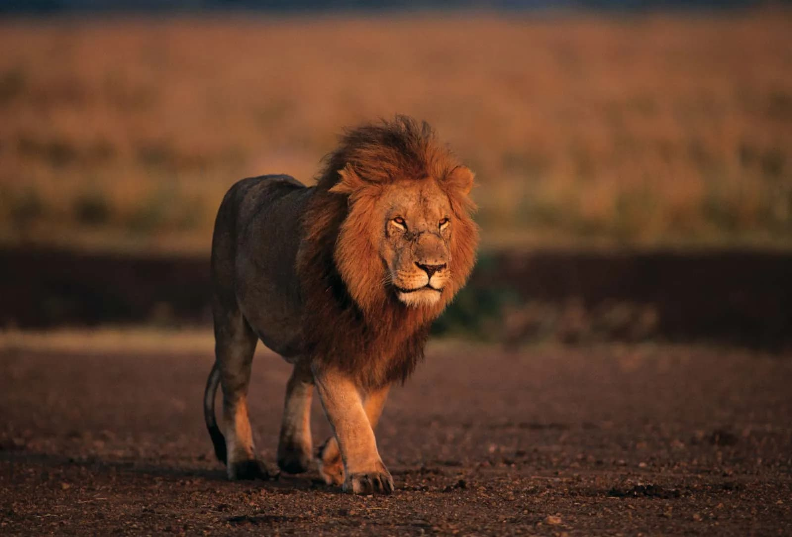
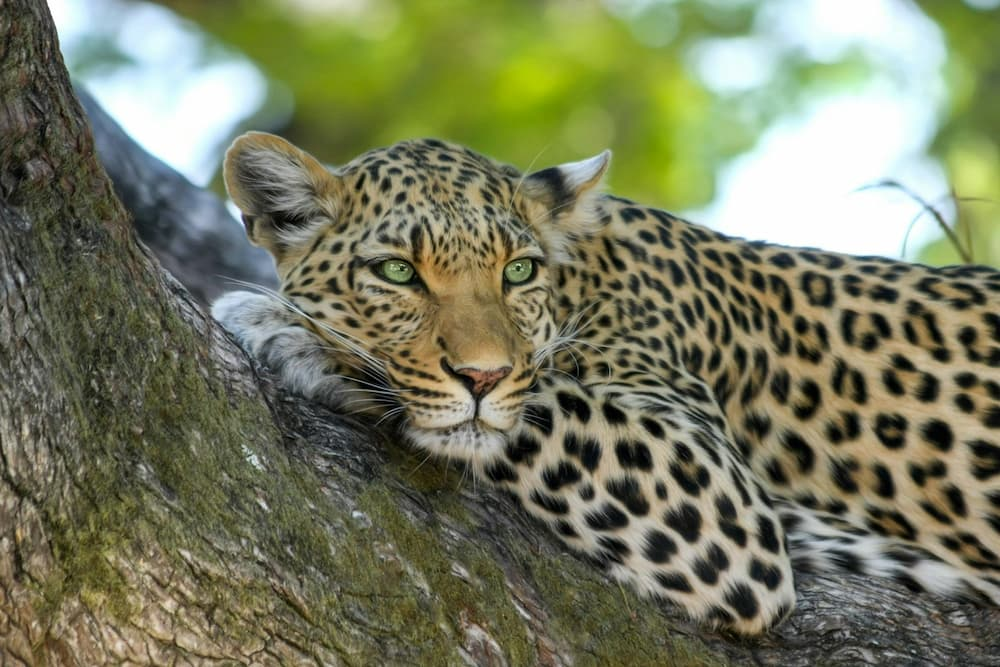
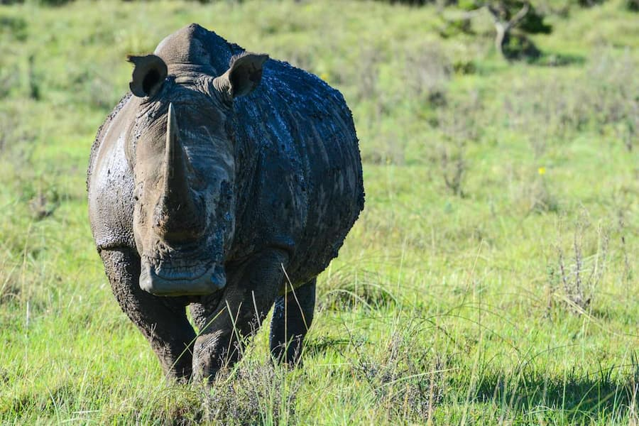
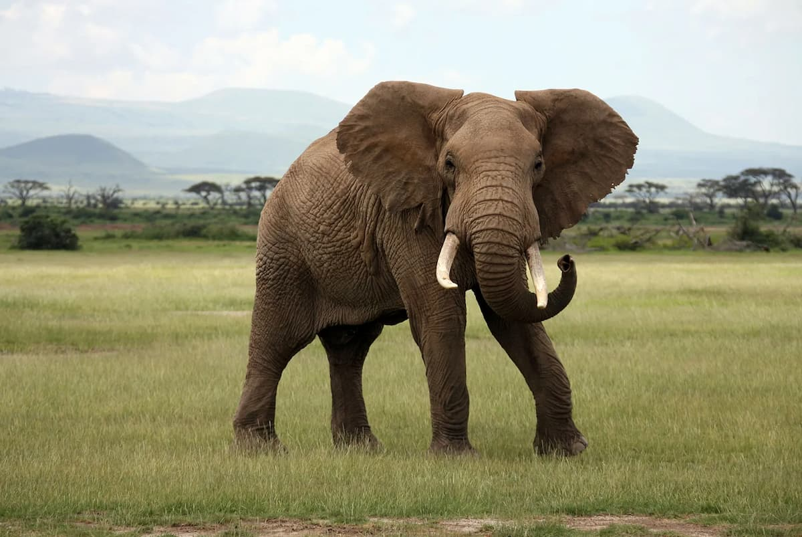
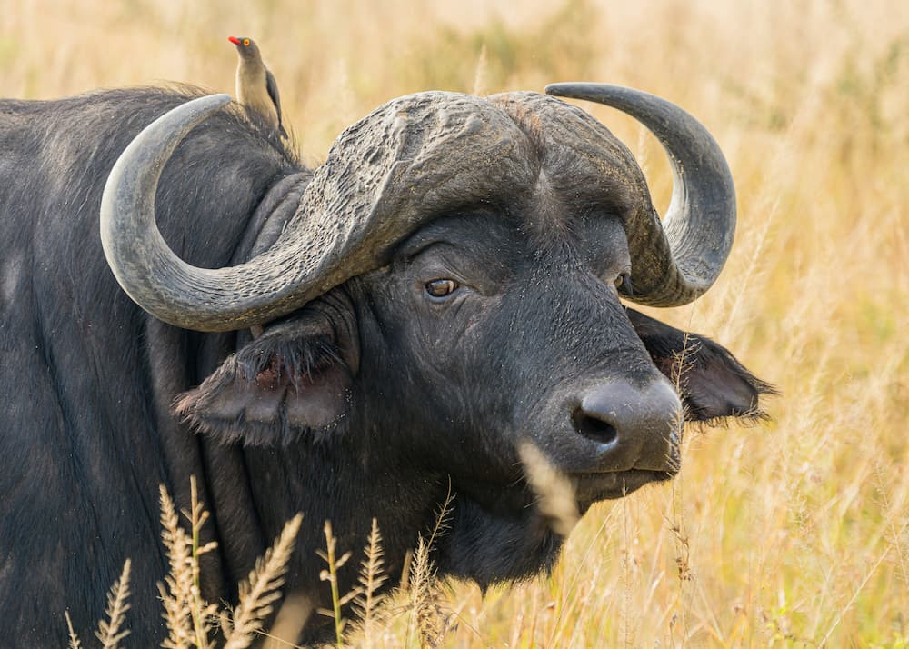
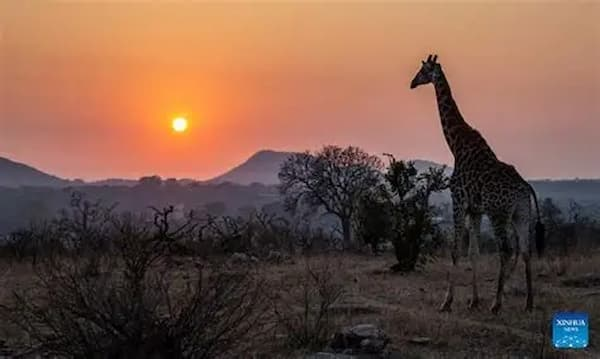
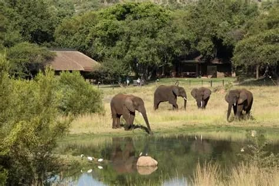

Lion
Lions are powerful predators and are often called the kings of the African savanna.
South Africa is one of the world's top safari destinations, home to diverse ecosystems and some of Africa's most iconic animals.
The Big Five are the most famous animals found in South Africa: Lion, Leopard, Rhino, Elephant, and Buffalo.

Lions are powerful predators and are often called the kings of the African savanna.

Leopards are elusive big cats known for their strength, agility, and beautiful spotted coats.

South Africa is home to significant rhino populations and plays an important role in rhino conservation.

African elephants are the largest land animals on Earth and are highly intelligent and social.

Buffalo are strong herd animals and one of the famous members of the Big Five.
South Africa's national parks offer visitors unforgettable wildlife experiences and opportunities to see animals in their natural habitats.

One of Africa's largest and most famous game reserves, home to hundreds of wildlife species and the Big Five.

Located in an ancient volcanic crater, Pilanesberg is a popular reserve known for excellent wildlife viewing where self-drive safaris are available or guided tours.